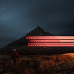
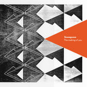

Quick Takes (July 2020)
Hello, and welcome to this month's Quick Takes feature.
A less jam-packed batch of picks than last month's, but just as impassioned nonetheless. Contributor Emma gave her (positive) takes on Katie Dey's latest artful experiment and Snowgoose's elegant folk-rock, while I spoiled things with less-than-stellar (negative) takes on new Gen Z mainstream alternative star Dominic Fike and New Zealand electro-pop duo The Naked and the Famous. And though my thoughts on recent indie darlings Dehd wasn't as positive as the rest (remember kids, a 6 out of 10 is considered "good" in the NR scale), I rather enjoyed Nick Reinhart's latest power-pop project Disheveled Cuss.
What were your favorite albums during the month of June? Anything we didn't get to review that we should've? You can always reach us on Facebook, Instagram, or our official Twitter page. - Juan
...
Dehd
Flowers of Devotion
(Fire Talk)
Dehd operates under that twangy, reverb-heavy sound that came to define the early 2010's indie-rock sound. Even if that field has narrowed, the Chicago trio challenges themselves to stand out by making some small, yet significant tweaks to their previous two albums' scrappier lo-fi. And for the most part, the trio packs lots of meaning into their hazy, crisp arrangements. After 2019's Water, which dealt with the duo of bassist Emily Kempf and bassist Jason Balla romantic dissolution, Flowers of Devotion is about finding stability and regaining one's strength when you can only rely on yourself. Finding a middle ground between DIIV's surfy start and Galaxie 500's laconic melancholia—all filtered through Kempf's strangely effective yodel—Dehd are mighty expressive even if their songs are fairly one-note. With the personality thing down pat, imagine what they'll achieve when they continue to expand their scope. [6/10] Juan Edgardo Rodríguez
 Disheveled Cuss
Disheveled Cuss
Disheveled Cuss
(Sargent House)
As the guitarist for Sacramento math-rock trio Tera Melos, Nick Reinhart writes pop-length rock songs with rhythmically complex melodic outbursts. And though he doesn't write straightforwardly for that project, it's key to emphasize the word "pop-length"—meaning that you could expect Reinhart to open up to the possibility of writing verse-chorus-verse structures if he ever so chooses. And that's precisely his approach with his solo project Disheveled Cuss, where he embraces the catchy, yet heavy guitars of 90s alternative rock with a touch of classic power-pop. Unsurprisingly, songs like Generic Song About You and Fawn show that he can write engaging hooks at different decibel levels. His passion is palpable on Shut Up, as his mind is frantically running over zippy surf rock. But there is a fair share of "weird" throughout the album, maybe not structurally but lyrically, as Reinheart shares feelings of dissolution and solitude with a slightly askew sense of humor. Aside from some less inspired moments, Reinhart mostly succeeds at writing hook-filled pop gems that are all killer and no filler. [7/10] Juan Edgardo Rodríguez
Dominic Fike
What Could Possibly Go Wrong
(Sandy Boys LLC/Sony)
Dominic Fike further exploits mainstream alternative's ongoing identity crisis on his debut full-length, What Could Possibly Go Wrong. Too guileless for the hip-hop heads, yet too carefree and derpy for the rock crowd, the Florida musician's focus-tested vanilla pop aims for every "hot" genre playlist imaginable—a shotgun approach to see which one sticks. At first glance, Fike's versatility (there is talent here) as an artist feels a little exploited. Stop me if you haven't heard this one before: you link up a promising artist to a like-minded Gen Z producer (in this case, Jim-E Stack) in hopes of assembling a series of discombobulated song ideas and turning them into a neat, radio-friendly package. Which is so 2020, and that's fine! But still, Fike doesn't make much of an effort to flesh out any of his genre-fluid ideas. Instead, he's content with writing half-written bouncy hip-pop anthems (Cancel Me) and tryhard "indie" jams (Double Negative) in hopes of charming everything and everyone. And, of course, it's a Post-Malone pop world and we're all just living in it—which means you'll get a handful of speedy cloud rap with a glossy finish (Politics & Violence). Everything here is careful and exact, practically down to a science, which should make Fike's next career pivot even more successful—his image and his likeness down pat and virtually devoid of any surprises. [3/10] Juan Edgardo Rodríguez
 Katie Dey
Katie Dey
Mydata
(Run for Cover Records)
Katie Dey seems to have been ahead of the curve; the Australian singer-songwriter’s fourth album finds her thinking deeply about online relationships before they became a staple of pandemic social life. On mydata, she trades the hazy lo-fi sound of her previous albums for more cleanly-produced indietronica, allowing the listener to focus on her lyrics more than ever before. Lead single Dancer is a clear highlight—an art pop orchestra of spacey synths, drum machines, and strings frame devastatingly to-the-point lyrics: “I am disappointing / I am self appointed / I will ruin everything I love but I need you.” While the rest of the album never quite reaches the highs of its opening tracks, mydata is a thought-provoking listen fit for the internet age both sonically and lyrically. [7/10] Emma Bauchner
 The Naked and the Famous
The Naked and the Famous
Recover
(AWAL/Somewhat Damaged)
Recover, The Naked and the Famous' fervent fourth LP, doesn't show any signs of a fraught duo who persevered at all costs. During the album's recording, the New Zealand duo of Alisa Xayalith and Thom Powers lost three of their core band members, lived through periods of stasis due to creative disagreements, and Powers went through life-threatening complications. That's a lot to take in when you're trying to complete a full body of work, but for the most part, they both generally maintain a bubbly, effervescence with strong desires to escape. It's par de course for a project that has always projected comfort through electro-pop melodies, like on Sunseeker and Everybody Knows, where they share serious and frivolous sentiments all at once with simple, life-affirming messages. There are exceptions: An)aesthetic is a near-specific account of Powers' near-death hospitalization. Despite the album's likable, glistening production, though, the duo mostly chooses to dismiss the darkness rather than embrace it—emphasizing a pop veneer that is bold, bright, and, well, a little bit boring. [5/10] Juan Edgardo Rodríguez
Snowgoose
The Making of You
(Ba Da Bing!)
Despite waiting eight years to follow up their 2012 debut, not much has changed musically for Scottish duo Snowgoose. On The Making of You, they continue to hone their warm yet distinctly Scottish folk-rock sound. Singer Anna Sheard, whose rich alto vocals bring to mind the likes of Sandy Denny and Natalie Merchant, had more of a hand in the writing of this album than their debut—and sounds ever so slightly more at home in her own winding melodies. Noticeably Celtic-influenced tracks (Everything, The Making of You) sit side-by-side with sunny West Coast folk-pop gems (Who Will You Choose, Deserted Forest), complementing each other beautifully. Seemingly straight out of 1970, The Making of You is a lovely album to which to reminisce about pre-pandemic times. [7/10] Emma Bauchner
16 August, 2020 - 04:19 — No Ripcord Staff